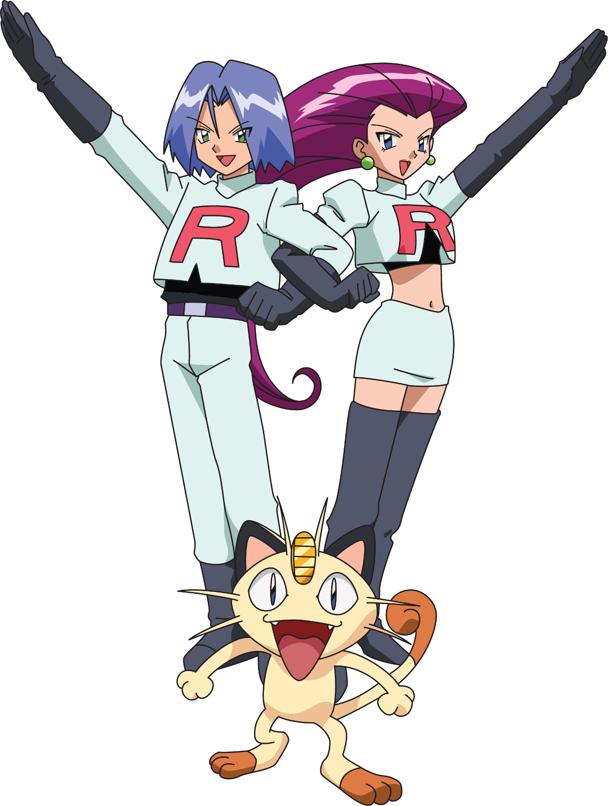
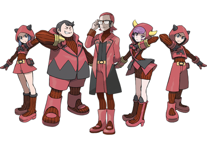
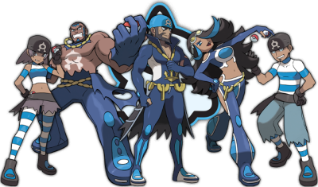
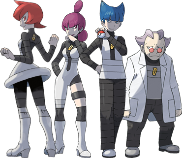
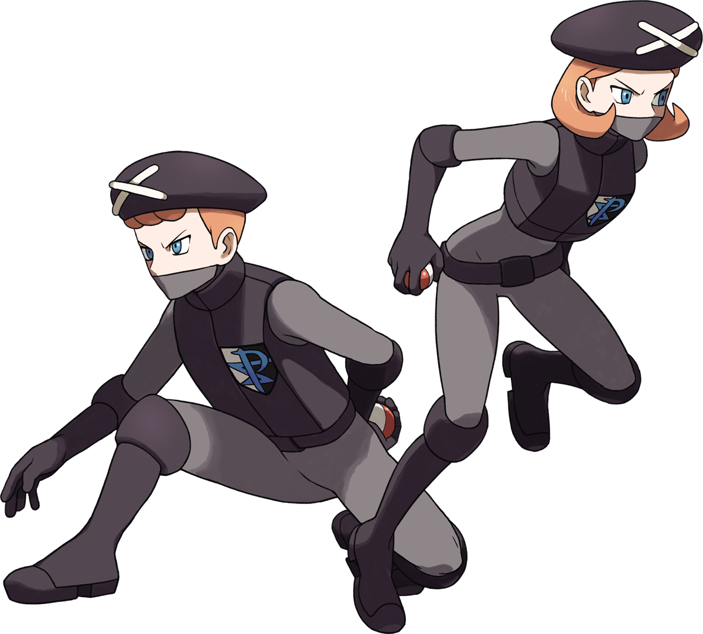
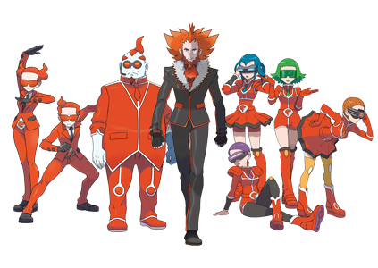
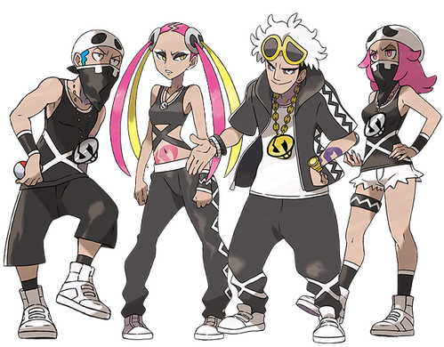
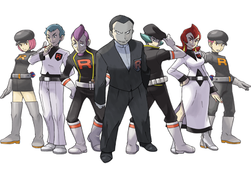
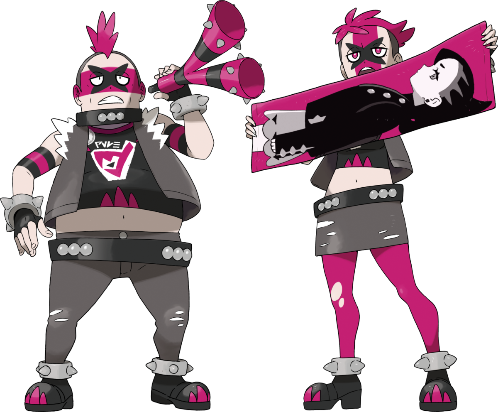

The Main Antagonists
| Crime Syndicates | Information | |
|---|---|---|
| Generation 1 & 2 | ||
| Team Rocket |  |
Team Rocket are based in the Kanto and Johto regions, with a small outpost in the Sevii Islands. While its main focus is stealing or capturing rare and strong Pokémon, and subsequently selling them, it also funds and conducts cruel experimental research on Pokémon. At times, it has even killed Pokémon. Their oath, as posted on the wall of one of their many bases, is "Steal Pokémon for profit. Exploit Pokémon for profit. All Pokémon exist for the glory of Team Rocket." Their ultimate goal is to take over the world using Pokémon. |
| Generation 3 | ||
| Team Magma |  |
In Generation III, Team Magma's ultimate goal is to expand the amount of landmass in the world, while in Generation VI, their goal is to create a world for human progress by making Groudon undergo Primal Reversion. |
| Team Aqua |  |
In Generation III, Team Aqua's ultimate goal is to expand the amount of water in the world, while in Generation VI, their goal is to return the world to a state for Pokemon by making Kyogre undergo Primal Reversion. |
| Generation 4 | ||
| Team Galactic |  |
Team Galactic is a group of criminals that focused on harvesting energy, but aren't above stealing Pokémon and planting bombs. Why exactly they do this is something even the grunts don't fully understand, but the admins know the true scope of the organization's goals, as outlined by their emotionless leader, Cyrus: with the power of Dialga and Palkia, erase the entire world and create a brand new one, devoid of spirit. |
| Generation 5 | ||
| Team Plasma |  |
Team Plasma's original goal was to "liberate" all Pokémon from their Trainers, by either convincing the Trainer to release their Pokémon, or by theft. Ghetsis, one of Team Plasma's leaders, exploited the group in an attempt to rule Unova as the only one with Pokémon. |
| Generation 6 | ||
| Team Flare |  |
Team Flare is a crime syndicate that, in the vein of Team Rocket, exploits Pokémon to create money. However, they're also obsessed with beauty and being above others; a trait that becomes startling considering the true ambitions of the team's leader, Lysandre. Though publicly a beloved figure across Kalos for his inventions and philanthropy, he seeks to combat the strain humans and Pokémon put on the world's natural resources and beauty — by any means necessary. |
| Generation 7 | ||
| Team Skull |  |
Team Skull is composed of misfits who failed the island challenge. They steal Pokémon from people, but unlike previous villainous teams, they do not have a specific goal other than to cause trouble and acquire enough money to support themselves. In a stark contrast to other villainous teams, they do not pose a serious threat to the wellbeing of Alola and its residents, the majority of whom consider them thuggish nuisances at worst. |
| Team Rainbow Rocket |  |
Team Rainbow Rocket first appears during the Pokémon Ultra Sun and Ultra Moon post-game when the organization takes over Festival Plaza and turns it into their virtual base. With the help of Sophocles, the player drives Team Rainbow Rocket out of the plaza. However, immediately afterwards, the organization takes over Aether Paradise with the help of Faba, who sides with Team Rainbow Rocket in an attempt to further his own career, transforming Lusamine's mansion into Team Rocket's Castle and taking the Aether Foundation president hostage. This starts Episode RR. |
| Generation 8 | ||
| Team Yell |  |
Team Yell are fans of Marnie who want her to become Champion, so they obstruct her rivals in their Gym Challenges. |